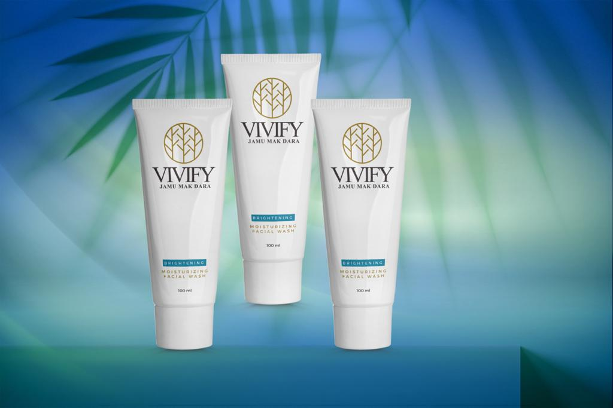

VIVIFY Moisturizing Facials
RM 49.90
Cosmeceuticals (both cosmetic and therapeutic) are a class of skincare products that contain biologically active ingredients capable of exerting physiologic changes to the skin. Simply, cosmeceutical skincare products don't just make your skin look better temporarily; they can actually create changes in your skin. Cosmetics, things like facial cleansers and makeup, can clean your skin or make it look nice, but they don't change the way the skin behaves.
Benefits of VIVIFY Cosmeceuticals Products:
Skin Care
“Acetogenins” have antimicrobial properties that can prevent the pathogens infections on the skin and reduce acne and other inflammation
Anti-Ageing
Rich amount of “Vitamin C or Ascorbic Acid” that can reduce the wrinkles, fine lines and discoloration of skin.
Solamin
The upper layer of the skin, better known as epidermis, starts losing its actual colour with age. This compound helps slow down the aging process of the skin and gives it a youthful look
Mupirocin
Mupirocin is an antimicrobial agent that inhibits the growth of gram-positive and gram-negative bacteria. Mupirocin topical ointment is a prescription medication used to treat impetigo, a skin infection caused by bacteria.
Annonacin
The annonacin displayed its toxic effects on the cell by the suppression of mitochondrial complex I which resulted in the ATP depletion and the repression of ubiquinone-linked NADH oxidase that is vital expression in cancer cells membrane which will kill the cancer cell and arrest the proliferation of cells.
Perfect for Your Skin
Kill off parasites, anti-antimicrobial properties, even out skin tone, fades dark spots and acne scars, prevent skin aging, brightening, contain antioxidants, good moisturizer, gentle exfoliant, suitable for all skin types and conditions including sensitive skin, eczema and psoriasis.
How claims above benefits:
In vitro and in vivo studies have explored the mechanisms underlying their analysis of physiochemical, bioactive compounds and detail toxicity study to ensure they are safe for using human being. Phytochemicals studies isolated such as alkaloids, terpenoids, polysaccharides, lactones, flavonoids, carotenoids, and glycosides as well as essential oils isolated from Sabah plants based. Approximately 117 bioactive compounds found from the Annona muricata, consisting mainly of annonaceous acetogenins, alkaloids, phenolic and megastigmanes compounds, among them, annonaceous acetogenins are the most predominant one. A rich source of annonaceous acetogenins, a unique group of derivatives of long chain fatty acids derived from the polyketide pathway.
They have diverse physiological effects such as anti-oxidant, anti-microbial, anti-parasitic, analgesics, anti-inflammatory properties, anticancer, and many other activities.
Acetogenins
Approximately 47 acetogenins were found from Soursop (A. muricata), the most potential compounds of Annonach; Annohexocin; Annomuricin A,C,E; Montanacin D,E,H; Muricin H,I; Solamin, Cis-solamin, Cis-solamin A. Acetogenins are long chain natural carbon compounds. They are kite-shaped molecules having a carbon skeleton with hydrogen and oxygen. They often contain about 35-37 carbon atoms and have many health benefits associated with them, including anticancer properties. They destroy cancer cells by blocking their internal energy source. Annonaceous acetogenins are attributed with a range of pharmacological activities including antifeedant, antimicrobial, antiparasitic, antitumor and immunosuppressant.
Alkaloids
Around 22 alkaloids were found from Soursop (A. muricata), the most potential compounds of anomurine, anomuricine, and isoquinoleic alkaloids.
Phenolic compounds
Thirty-four phenolic compounds are found from the A. muricata. Phenolic compounds are considered as the most important phytochemicals as most of them are soluble in water. Plant phenolic compounds linked to antioxidants, structural polymers (lignin), attractants (flavonoids and carotenoids), UV screens (flavonoids), anti-allergic, anti-carcinogenic, anti-arthritic, antimicrobial activities and signal compounds (salicylic acid, flavonoids). Phenolic compounds are vital in defense responses chemicals (tannins, phytoalexins), such as anti-aging, anti-inflammatory and anti-proliferative activities.
Megastigmanes
Megastigmanes compound is related to terpene class sub classed by sesquiterpene, trivially named as Megastigmanes. Megastimane compounds are showing potential activity against scavenging radical (DPPH) and hepatoprotective activities. Around 14 megastigmanes compound found, namely, annoionol A,B,C; annoionoside; vomifoliol; roseoside; turpinionoside A; citroside A; blumenol C; (+)- epiloliolide; loliolide; (1S,2S,4R)-trans-2-hydroxy-1,8-cineole β-D-glucopyranoside; (Z)-3-hexenyl β-D-glucopyranoside and rutin. Annona muricate have higher content of annonacin, it is showed stronger antitumor activity.
Collagen Type I
Collagen Type I is derived from Sabah herbs and natural sources, never used any synthetic based. This type of collagen is by far the most prominent in our body. Collagen Type I makes for 90% of all the collagen inside us, so it is being one of the building blocks in our structural organs. Collagen Type I provides support to our connective tissues, the skin, and other fibrous cartilage.
Collagen Type IV
Collagen Type IV is derived from Sabah herbs and natural sources never used any synthetic based. The fourth and final type of collagen found in the human body is the one that really interests us today. Collagen Type IV performs the important functions of filtering substances in your body and providing a structure to your skin. Collagen Type IV is basically to reduce wrinkles, scars, and other kinds of aging or injuries to the skin.
Phenolic compounds
The uses of glycosaminoglycans in skin care are renowned for being excellent ingredients for increasing overall hydration. Glycosaminoglycans may inadvertently supply anti-aging and moisturizing benefits.
Glycosaminoglycans (GAGs), also known as mucopolysaccharides, are polysaccharides that deal with the support and maintenance of skin structural proteins such as collagen and elastin. Glycosaminoglycans are frequently occurring in hyaluronan (hyaluronic acid) and chondroitin sulfate, which function as increasing overall hydration -binding molecules that can hold nearly 1000 times their own weight. Its main function is to retain water to keep your tissues well lubricated and moist.
Protein
Protein and amino acids are essential for healing and repairing damaged tissue, including that of hair, skin and nails. They also increase cell turnover (the sloughing off of old skin/hair/nail cells to make room for new cells).
The main benefit of using proteins is to improve the hydration of skin. Proteins increase the dehydration in the skin which helps to reduce wrinkles and improves the functions of the skin barrier. Proteins quickly were considered useful ingredients for creating a suitable environment for healthy skin and hair because of their ability to bind water with the horny layer of skin and its annexes.
Collagen Type IV
Collagen Type IV is derived from Sabah herbs and natural sources never used any synthetic based. The fourth and final type of collagen found in the human body is the one that really interests us today. Collagen Type IV performs the important functions of filtering substances in your body and providing a structure to your skin. Collagen Type IV is basically to reduce wrinkles, scars, and other kinds of aging or injuries to the skin.